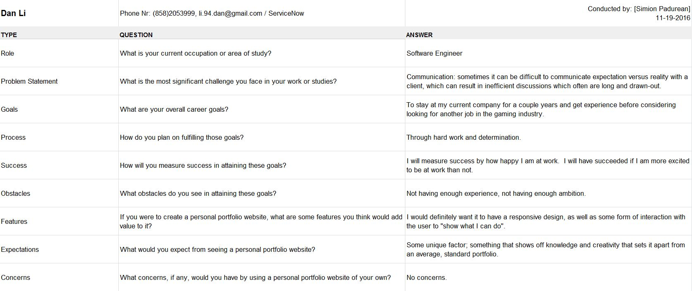
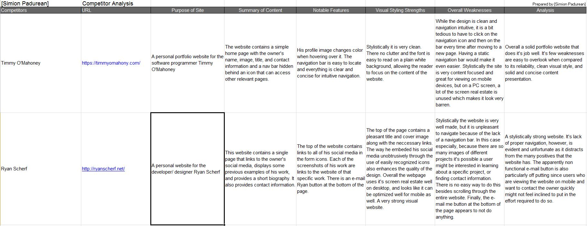
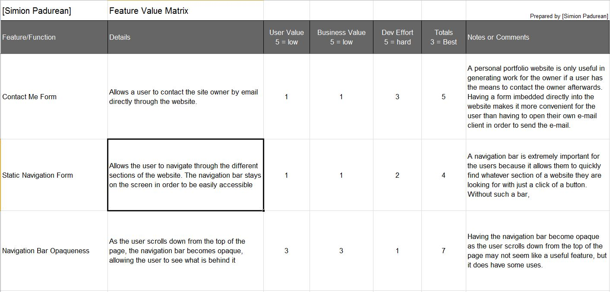
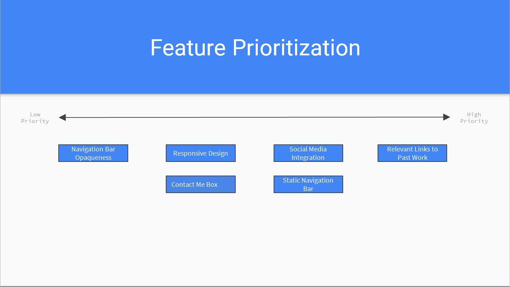
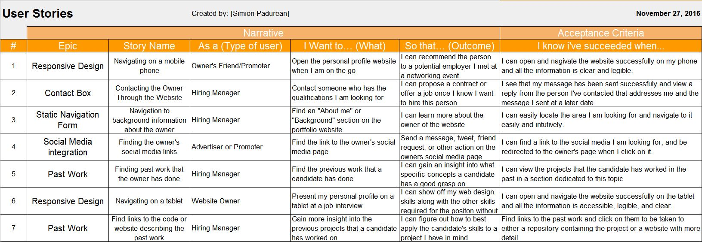
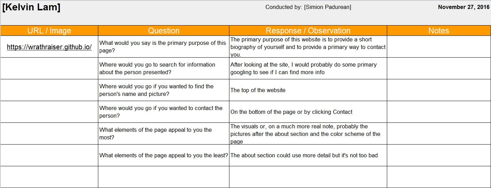
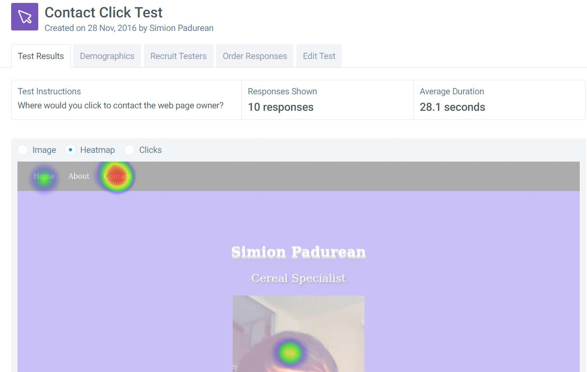

Summary of Findings and Interface Enhancements
Presented by Simion Padurean
User Research
User Interviews
Competitor Analysis
Feature Value Matrix
Feature Prioritization
User Testing
User Stories
Cognitive Walkthrough
User Test
Summary of Findings
In my research I found that there were two sections that users consistently valued above all others in a personal portfolio website: the "About Me" section and the "Resume" section. This is to be expected, as the point of a personal portfolio website is to gain employment, and hiring managers rely heavily on past experience when deciding which candidate they will accept for a job. In fact, in my 2 question test case 7/10 people said that the most important section of a personal profile website is the "About Me" section. The biggest challenge was probably getting my testers to stay on topic. In my one click test when one tester was asked why he/she clicked on a specific area, their response was "why not". Another test response in my 2 question test case was even more off-topic which lead to my having to re-do the entire test and ask people who had already answered to anwer again. It is possible that such an action may have skewed the results of the test, so in the future I will try to be more careful to cearly convey the purpose of the test such that it does not get misunderstood.
The research exercises helped me understand how nuanced testing can be. As discussed in the class, many times people will have their own opinion about what ought to go in a product. Trying to implement everything you hear from user testing can be damaging and result in an even worse product down the road. If there are certain features, however, that are mentioned a signifcant amount of time by the users (particularly if they mention those features without being asked about them directly) then that is a good sign that said features are worth looking into. Overall this process has helped me understand how useful testing can be when improving a website. I learned that many of the steps in the User Research and User Testing stages actually complement each other very well. Since this was my first time trying user research, I did not really go back and update my documents after conducting user testing. In future projects where user research and testing is essential, I would update my user research documents with each testing phase. This would allow me to have more relevant documents and improve my interface with features that people actually want to see.
For my User Interviews, I spoke to people who either currently work in the Computer Science field or hope to do so in the future. Since my portfolio website will be primarily aimed at the Computer Science field, I thought that this would be the best demographic to target in my user interviews. I asked a few questions regarding their goals and aspirations for the future in order to provide context for my final questions. What I found was that the majority of the people I interviewed are primarily looking for relevant content and do not place as much emphasis on the aesthetic of the website as I had thought. Although having an aesthetic website is a nice perk, and it is of course important to have good usability and responsive designlo, my user interviews have lead me to believe the content of the website is what matters the most. Particularly, users are looking to find previous works and links to those works.
User InterviewsA competitor analysis is an evaluation of how others in the same industry are doing something. In this case, I took a look at the personal portfolio websites of other people in the Computer Science field. This would allow me to see what features other programmers believe are valuable. Particularly, I decided to investigate those high profile websites that stand out among Google searches, to see what exactly it is that sets them apart. I did not find a concrete answer to this question. That is to say, there is no one thing that I can point to and say that this feature is present in every website. In fact, one competitor, Robby Leonardi, did not have any sort of navigation in his website. In his case such a feature may have defeated the purpose of his website, but personal preference does play a part as well, particularly when the website is so personal in nature. If I had to pick one consistency among all websites however it would have to be solid, informative content that answered important questions a user may have about the programmer who made it, and links to previous works.
Competitor AnalysisThe feature value matrix maps the proposed features of a product to their business value, user value, and developmental effort. The matrix allows the developers to evaluate whether or not a feature is truly needed and which features should be developed first. I chose the features that I believed would be most essential in a personal profile. These are basic features such as a contact form and a navigation menu which add usability and substance to the website. I rated the development effort and business value of these features based on my own ability to implement them and on what I percieved their value to be from my research so, as I gain more experience and conduct further research, these values may change. For the time being, however, I believe they are a good representation of what a portfolio website needs to have.
Feature Value MatrixI prioritized the features I decided to include based on the value matrix mentioned above. The lower the total value of a feature, the more important such a feature is. When building an interface following the proper design steps I would have conducted the feature prioritization before beginning to work on my project. Therefore, before I begin work I would think about creating a roadmap in which I can organize which features I want to implement and at what point in the development process I want to do so. This way I can finish some features and have them tested in order to see if they require any changes before moving on to the next set of features. I would continue this proecess until I have implemented all my features and, by the time I finish building my interface, I would have tested all of my features multiple times.
Feature PrioritizationUser stories provide several benefits to the development process. They are useful for planning out features that need to be built. Another advantage that user stories bring to the table is that they are generally very straightforward. It's easy to get bogged down in details during development and lose sight of the end goal. User stories help bring the focus back to what the feature is meant to accomplish. My website is a personal portfolio website so the primary users would be potential employers and hiring managers. I created most of my user stories with that user in mind. What would a hiring manager want to do when visiting my personal portfolio website? Likely, he or she would want to find my information, past work, and some way to contact me. For the sake of diversity, I also included other users like friends or advertisers, who might want to show off my website if they come across an opportunity that may be of interest to me. These kinds of users should also know how my website works and what to look for.
User StoriesA cognitive walkthrough is a method used to measure the usability of an interface. In this case I asked some users to go through some tasks on the website and answer some questions about what they were doing. The goal of a cognitive walkthrough is to understand how intutitive an interface is for new users. One challenge I faced while conducting these tests was conveying that the users were supposed to use only the website in order to solve the questions I asked. This taught me that my website was lacking in information. It is also important to remember that the answers given by the users are, in the end, just their opinions and should not be taken as written in stone. Two of the answers given by users I tested were completely opposite. In conclusion, we should treat the answers from cognitive walkthroughs more as suggestions to be investigated rather than final answers to be implemented right away.
Cognitive WalkthroughFor the user tests I chose to conduct a one-click test and a 2 question test. I chose these tests primarily because of their simplicity in both administering and in completing. Most of the people I tested were college age students, since I did not have access to other testers. In general, I believe that shorter, more concise tests are more effective because they only require a shorter, simpler answer which even testers with small attention spans can provide. Particularly in the college age demographic where testers are generally on the go a lot and have little patience for long, drawn out tests. In fact, because of this demographic it was challenging getting real responses, since a few people did not take the tests seriously and decided to troll and put random answers instead. Overall, however, the results were about what I expected. The one-click test was fairly easy and most people got it. The ones that didn't unsurprisngly, said they clicked too fast and skipped over the directions. In terms of the question test, most people had the same answers for both questions which is a good indication for potential steps in improving the website.
2 Question Test ResultsOne Click Contact Test Results
Incorporation of Findings
I would begin incorporating my findings by creating a timeline for my project which would be based primarily around my feature prioritization graph and the Kano model. As soon as I finish implementing a few features and have an interface that is usable, I would go into testing in order to get feedback on the features I implemented. For my current portfolio website, some of the most common feedback I got was on creating a more professional background and resizing or replacing my images with clearer ones. This is a fairly simple fix so I would begin there. The next piece of important feedback I got was that I needed more personal information. To this end I would add another section to my portfolio where I would list my skills and previous job positions.
Once I finished making all the changes that I had planned and implemented all the features on my feature value matrix, I would look towards my competitor analysis to see what other features top competitors have that could be of benefit to my website. I am expecting that these features would involve greater development time because of my current skills, but would allow me to create a more aesthetically pleasing website while also gaining more HTML/CSS/Javascript experience.